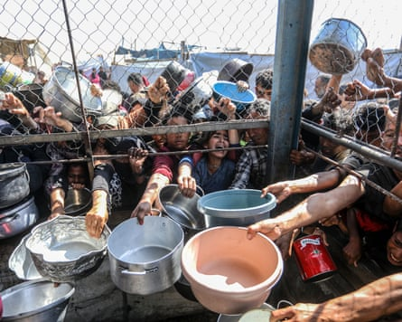

I n Gaza City on Sunday morning, there was only one topic of conversation: the possibility of peace. In the half-ruined town, as across the entire territory, few took their eyes off their phones, a television or better-informed relatives or friends for more than a few minutes.
Um Fadi Ma’rouf, from the now destroyed town of Beit Lahia in the far north of Gaza, said she was encouraged by the positive response from Hamas to the most recent US-sponsored proposal of terms for a deal.
“I think this means it will happen. I really hope it goes through because this situation has exhausted us,” said the 50-year-old, who has been forced to move nine times during the conflict.
Israel has so far rejected Hamas’s demands for changes to a 14-point draft agreement circulated last week but on Sunday despatched a negotiating team to Qatar for indirect talks. Benjamin Netanyahu, the Israeli prime minister, is scheduled to meet Donald Trump, who is thought to hope to announce a ceasefire himself, in Washington on Monday evening local time.
In Gaza City, the mood was tense and subdued. In the early morning, barefoot children with torn clothes and dirty faces walked the cracked streets carrying pots in search of food or scavenged for rubbish that could be used as fuel. Later, many of those living in stifling tents headed to the coast in search of respite from soaring temperatures.
Many people in Gaza are living in tents after being displaced multiple times by Israeli strikes across the territory.Photograph: Anadolu/Getty Images
“From time to time, we hear airstrikes, but they are very far away and barely audible,” one Gaza City resident told the Guardian. “We haven’t seen any planes but a warship came very close to the shore but caused no trouble. It didn’t open fire.”
There have been two previous ceasefires in Gaza, one in November 2023, and a second this year which came into effect in January but collapsed in March when Israel reneged on a promise to move to a second phase that might have led to a definitive end to the conflict. A new Israeli offensive followed and an 11-week total blockade that led to almost the entire population facing the threat of famine .
The near 21-month war was triggered by a Hamas raid into Israel in October 2023 in which militants killed 1,200 people, mostly civilians, and took 250 hostages. Fifty hostages remain in Gaza, of whom more than half are thought to be dead.
The ensuing Israeli offensive has reduced much of Gaza to rubble, displaced almost the entire 2.3 million population multiple times and killed more than 57,000, mostly civilians.
Ma’rouf said: “During the last truce, I never expected the war to return. When it did, it was a tragic feeling – indescribable. I lost my sister in this war, along with around 20 other members of my extended family. My greatest fear is losing someone else from my family – one of my children, my siblings, or close relatives.”
Much of Gaza has been reduced to rubble in the near 21-month war.Photograph: Anadolu/Getty Images
Nineteen-year-old Shahd Ashour, whose sister’s fiance was killed just before the last ceasefire was announced, said she too was remaining cautious.
“My biggest fear now is that the news of the ceasefire turns out to be false – just rumours – and the war and killings continue. I still have hope, but only a little,” she said.
Many children share such fears. Lama al-Mubayyed, 12, said she was scared of being “torn apart, killed, paralysed or losing a limb”.
“I was so happy during the last ceasefire. We felt a bit safe. But when the war returned, I cried a lot because it meant going back to the suffering of tents, the summer heat, and repeated displacement,” Lama said.
Aid officials in Gaza said on Saturday that supplies of fuel , essential to run the generators that are the primary source of power in the territory, are close to being exhausted. Without fresh deliveries, they said, humanitarian operations would collapse, the few remaining hospitals would be unable to function and communications would be cut off.
“We are hopeful about a ceasefire of course, but we need to know how much aid is going to get in and how fast, and who will be able to distribute it. There are a lot of questions that are unanswered,” one humanitarian official in Deir al-Balah said.
In recent weeks the flow of aid into Gaza has varied, though it has been little more than a fraction of what is needed, UN officials said. Hundreds have died seeking food from looted trucks or a small number of distribution hubs. Prices for the limited basics available in the few markets vary wildly from day to day, though remain far too high for almost all in the territory to afford. On Sunday, a kilo of flour was selling for the equivalent of $10, a kilo of lentils for $12 and a kilo of rice or pasta for $14.
Hundreds of Palestinians have died in recent weeks while seeking food as the flow of aid into the territory has been a fraction of what is needed.Photograph: Anadolu/Getty Images
“The greatest hardship we’re facing now – myself and everyone in Gaza – is finding food and water each day,” said Adel Sharaf, 18, who is from Beit Lahia but is living in a tent after his home was destroyed.
Many in Gaza are bracing themselves for bad news. Ahmad, from the al-Shujaiya neighbourhood that has been almost entirely destroyed in repeated Israeli military operations, said he was pessimistic “because everyone was lying”.
“Every week they hear about a possible ceasefire, and then it falls apart. This is always what happens, just like in previous times,” the 35-year-old said.
Abu Adham Abu Amro, 55, said he was afraid to hope because he had already lost 25 family members in the conflict.
“We pray to God that the ceasefire succeeds this time. Our days are full of hardship – struggling to access water and food, dealing with a shortage of resources, and the rise in prices,” Abu Amro, who is from Gaza City, said. “Right now, I have no fears other than the possibility that the ceasefire won’t happen this time.”